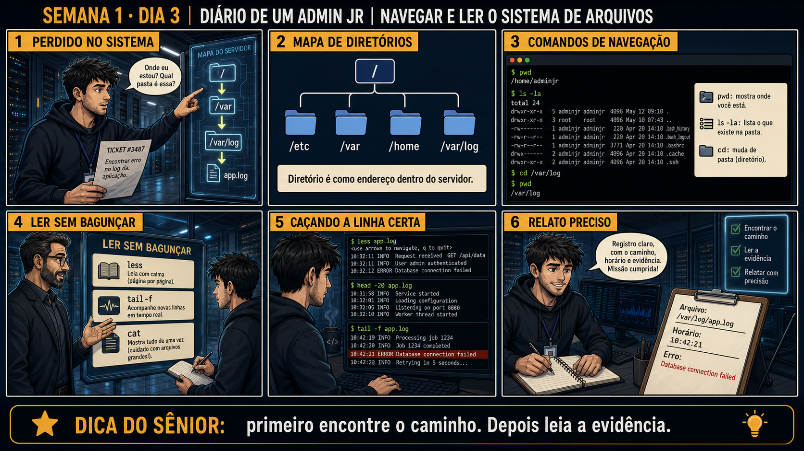

DIARIO DE UM ADMIN JR. | FASE 1 — LINUX, DO BÁSICO AO AVANÇADO
🧠 Antes de começar — 20 segundos de memória (Dias 1 e 2)
1. No Dia 2 você comparou id entre dois usuários. Sem olhar: o que explicava a diferença de poder entre eles? 2. Por que ler um arquivo de log pode falhar mesmo com o arquivo existindo?
1. A lista de grupos, não o número do UID. Estar em sudo ou adm é o que dá acesso — e hoje isso reaparece: vários logs em /var/log só são legíveis por quem está no grupo adm. 2. Permissão. O arquivo existe, mas a sua identidade não tem direito de leitura sobre ele. É por isso que cat às vezes responde "Permission denied" em vez de "No such file" — são erros diferentes contando histórias diferentes.
🔗 Conecta com o Dia 2: ontem você aprendeu a confirmar sua identidade e o host antes
de qualquer coisa. Hoje, com isso resolvido, o primeiro chamado de verdade chega: acham um erro específico
dentro de um log. Sem saber navegar com fluência, você se perde procurando — e perder tempo procurando é
diferente de não saber a resposta.
🔓 Privilégio de hoje: ainda ZERO mudança no sistema. Mas hoje você ganha
fluência de navegação — depois de hoje, achar qualquer arquivo específico num servidor deixa de ser um
problema, mesmo em diretórios que você nunca visitou antes.
Semana 1 · Dia 3 | Nível Júnior
Navegar e Ler o Sistema de Arquivos
pwd, ls, cd, cat, less, head, tail -f — e por que cada um serve pra uma coisa diferente
ANTES DE ALTERAR, OBSERVE. DEPOIS DE ALTERAR, VALIDE.

1. O chamado
#4013PRIORIDADE ALTA14:02aberto por: suporte N1
host: srv-app-02 · serviço: aplicação de pedidos
"Cliente relata erro intermitente ao finalizar pedido. Precisamos ver o log no momento exato em que o erro acontece."
O log tem 400 mil linhas e o erro acontece de novo em minutos. Como você olha?
💡 Passa o mouse nas palavras destacadas pra ver uma dica rápida — clica se quiser a explicação completa com analogia.
2. O sênior te conta
🧑🏫 antes dos termos técnicos, a história de hoje
Hoje chegou um chamado enxuto demais: "Encontrar erro no log da aplicação." Só isso — nem pasta, nem
horário, nada. O Júnior ficou olhando pra tela sem saber por onde começar. Perguntei: "antes de procurar o
erro, você sabe nem onde está agora?" Ele rodou pwd, viu que estava na própria pasta pessoal, longe
de qualquer log de aplicação — o mesmo hábito do Dia 1 e do Dia 2, confirmar onde você está antes de
agir, aparecendo de novo hoje.
Aí ele quase cometeu o erro clássico: ia abrir o log inteiro com cat. Eu segurei a mão dele — um
arquivo de milhares de linhas despejado de uma vez na tela não é leitura, é enchente. Expliquei a
diferença entre ler um livro com calma usando less, uma página de cada vez, e ficar de olho na
porta com tail -f, vendo quem entra agora em tempo real. Cada ferramenta de leitura resolve um
problema diferente — usar a errada não é erro de digitação, é erro de escolha.
Foi assim, com less e tail -f na mão, que o Júnior achou a linha exata do erro
sem afogar o terminal. É esse método — navegar com propósito, não no escuro — que você vai treinar agora.
3. Decodificador de conceitos
Clica em qualquer termo pra ver a definição completa e uma analogia do dia a dia:
4. Ferramentas e leitura da evidência
Comando
O que observar e por que importa
pwd
Mostra o caminho completo de onde você está agora.
ls -la
Lista tudo na pasta atual, incluindo itens ocultos (os que começam com ponto).
cd /var/log
Muda de pasta — /var/log é onde a maioria dos logs do sistema fica.
less app.log
Abre o arquivo pra leitura navegável, sem carregar tudo de uma vez na tela.
head -20 app.log
Mostra só as primeiras 20 linhas — útil pra ver o início de um arquivo.
tail -f app.log
Acompanha o arquivo em tempo real, mostrando cada linha nova assim que ela é escrita.
$ pwd
/home/adminjr
$ ls -la
total 12
Documentos Downloads logs
$ cd /var/log
$ pwd
/var/log
$ tail -f app.log
10:41 INFO [api] conexão estabelecida
10:42 ERROR conexão recusada
10:43 INFO [api] nova tentativa
10:44 INFO [api] conexão OK
5. Laboratório guiado — pegue na mão, comando por comando
Segurança: execute as mudanças apenas em VM descartável e confirme nomes de discos, hosts e arquivos antes de cada comando.
CENÁRIOAção: Crie um log grande e um que cresce em tempo real — sem os dois, metade dos comandos de hoje não tem o que mostrar.
mkdir -p ~/lab-logs
seq 1 200000 | sed 's/^/2026-09-05 INFO linha /' > ~/lab-logs/grande.log
ls -lh ~/lab-logs/grande.log
# agora um log que cresce sozinho, em segundo plano:
(while true; do echo "$(date +%T) INFO pedido processado"; sleep 2; done) >> ~/lab-logs/vivo.log &
echo "gerador em segundo plano: PID $!"
🔍 Detalhar esse comando
seq 1 200000
Gera uma sequência de números de 1 a 200000, um por linha — usado aqui só para criar volume de dados de teste.
|
Pipe: envia a saída do seq como entrada do sed, em vez de mostrar na tela.
sed 's/^/2026-09-05 INFO linha /'
Substituição do sed: '^' é o INÍCIO de cada linha, então isso insere o prefixo de log antes de cada número, sem apagar o número original.
>
Redireciona a saída para um arquivo, criando (ou sobrescrevendo) ~/lab-logs/grande.log.
Resultado esperado: o grande.log com alguns MB e a mensagem com o PID do gerador. O vivo.log ganha uma linha nova a cada 2 segundos.
Por que fizemos isso:head, tail -f e less resolvem problemas diferentes — mas isso só fica óbvio quando existe um arquivo grande demais para cat e outro que muda enquanto você olha. Agora você tem os dois.
Cilada comum: rodar isso na raiz ou em /var/log. Use ~/lab-logs como aqui — e anote o PID, você vai encerrar esse processo no último passo.
Se o seu resultado foi diferente
"seq: command not found" → alternativa: for i in $(seq 1 200000) não vai funcionar sem seq — use awk 'BEGIN{for(i=1;i<=200000;i++) print "2026-09-05 INFO linha " i}' > ~/lab-logs/grande.log. O gerador não mostrou PID → rode jobs -l para ver os processos em segundo plano desta sessão. O arquivo ficou pequeno demais → confira se o sed rodou; sem ele o arquivo ainda funciona para o exercício, só fica menor.
Ação: Confirme onde você está, veja o que existe na pasta, depois navegue até /var/log.
pwd
ls -la
cd /var/log
pwd
🔍 Detalhar cada comando desse bloco
pwd
Mostra o caminho absoluto completo do diretório atual.
ls -l
Lista o conteúdo do diretório em formato detalhado: permissões, dono, grupo, tamanho e data.
-a
Inclui também arquivos e pastas ocultos (os que começam com ponto).
cd /var/log
Muda o diretório de trabalho da shell para /var/log, o caminho padrão dos logs do sistema.
pwd (segunda vez)
Confirma que a navegação funcionou, mostrando o novo diretório atual.
Resultado esperado: o segundo pwd mostra /var/log, confirmando que a navegação funcionou.
Por que fizemos isso: confirmar a posição antes e depois de navegar é o mesmo hábito do Dia 1 e do Dia 2 — sem isso, você não tem certeza de que o próximo comando vai atuar onde você pensa que está.
Cilada comum: encadear vários cd seguidos sem checar pwd entre eles — depois de 3-4 comandos, é fácil perder a noção de onde você realmente está.
Ação: Abra um arquivo de log com less e navegue com as setas, depois saia sem alterar nada.
less app.log
# setas pra navegar, "q" pra sair
🔍 Detalhar essa ferramenta
less
Paginador interativo: carrega o arquivo sob demanda (não lê tudo de uma vez), permitindo rolar página por página.
app.log
O arquivo aberto para leitura.
setas
Navegam para cima/baixo dentro do arquivo, uma linha ou página por vez.
q
Tecla que sai do less sem alterar o arquivo.
Resultado esperado: você consegue rolar pra cima e pra baixo sem o terminal ficar poluído, e sair sem alterar nada.
Por que fizemos isso: less carrega o arquivo sob demanda, página por página — é a ferramenta certa pra qualquer arquivo que você não sabe o tamanho antes de abrir.
Cilada comum: abrir com cat por hábito, mesmo depois de aprender a diferença — num log de produção de milhares de linhas isso afoga o terminal na hora.
Ação: Compare o início e o final do mesmo arquivo.
head -20 app.log
tail -20 app.log
🔍 Detalhar esses comandos
head
Mostra o INÍCIO de um arquivo — por padrão, as 10 primeiras linhas.
-20
Quantidade de linhas a mostrar — aqui, as primeiras 20.
tail
Mostra o FINAL de um arquivo — por padrão, as 10 últimas linhas.
-20 (no tail)
Quantidade de linhas a mostrar — aqui, as últimas 20.
Resultado esperado: head mostra o início do arquivo, tail mostra o final — conteúdos diferentes do mesmo arquivo.
Por que fizemos isso: saber que existem essas duas pontas evita abrir o arquivo inteiro só pra ver o começo ou o fim — economiza tempo numa investigação real.
Cilada comum: achar que head e tail mostram a mesma coisa só que "diferente" — são pontas opostas do arquivo, não a mesma informação reorganizada.
Ação: Acompanhe um arquivo em tempo real e, em outra janela/aba, adicione uma linha nova nele.
# janela 1:
tail -f app.log
# janela 2, ao mesmo tempo:
echo "teste" >> app.log
🔍 Detalhar esse comando
tail
Mostra o final de um arquivo — por padrão, as últimas 10 linhas.
-f
Modo 'follow': depois de mostrar o final, continua rodando e exibe novas linhas assim que são escritas — é o que permite acompanhar um log ao vivo.
app.log
O arquivo sendo acompanhado.
Resultado esperado: a linha nova aparece automaticamente na tela do tail -f, sem precisar rodar o comando de novo.
Por que fizemos isso: essa é a ferramenta certa pra qualquer investigação "ao vivo" — foi assim que o log do chamado de hoje mostrou o erro aparecendo e sumindo em tempo real.
Cilada comum: esquecer tail -f rodando numa sessão e sair sem encerrar com Ctrl+C — não altera nada no sistema, mas ocupa a sessão sem necessidade.
🧑🏫 Aqui entra o Mentor (em breve): se a linha não apareceu automaticamente, este é o ponto onde o chat com o Sênior-IA vai ajudar a debugar o motivo.
Ação: Escreva o relato do ticket #3487: caminho do arquivo, horário do erro, mensagem exata.
# não é comando de shell — é o relato, 3 linhas
# ex: "Arquivo: /var/log/app.log. Horário: 10:42. Erro: conexão recusada, recuperado em 10:44."
Resultado esperado: um relato de 3 linhas que qualquer colega conseguiria seguir sem perguntar nada de volta.
Por que fizemos isso: o registro é o produto real do seu trabalho hoje — sem ele, ninguém além de você sabe o que foi encontrado, mesmo que você tenha investigado certo.
Cilada comum: registrar só "encontrei o erro" sem horário nem mensagem exata — isso obriga quem ler depois a refazer toda a investigação do zero.
CENÁRIOAção: Encerre o gerador em segundo plano e apague os logs de laboratório.
kill %1 # encerra o gerador (ou: kill )
jobs # deve voltar vazio
rm -rf ~/lab-logs
ls ~/lab-logs 2>/dev/null || echo "laboratório limpo"
🔍 Detalhar cada comando desse bloco
kill
Envia um sinal para terminar um processo.
%1
Referência ao job número 1 em segundo plano DESTA sessão de shell — não é o PID do processo.
jobs
Lista os processos em segundo plano controlados pela sessão atual.
rm -rf
Remove recursivamente (-r, entra em subpastas) e força sem pedir confirmação (-f).
~/lab-logs
A pasta de teste criada no início do laboratório, alvo da remoção.
ls ... 2>/dev/null
Lista a pasta descartando qualquer mensagem de erro (redireciona stderr para o 'buraco negro').
|| echo ...
Só executa o echo se o comando anterior (ls) falhar — aqui, espera-se que falhe porque a pasta não existe mais.
Resultado esperado:jobs sem nada listado e a mensagem "laboratório limpo".
Por que fizemos isso: processo em segundo plano esquecido continua escrevendo arquivo para sempre — é exatamente assim que aparece um "disco enchendo do nada" semanas depois. Encerrar o que você iniciou faz parte do trabalho.
Cilada comum: fechar o terminal achando que isso mata o gerador. Dependendo de como a sessão termina, o processo pode continuar rodando órfão. Encerre explicitamente e confirme com jobs.
Se o seu resultado foi diferente
"kill: %1: no such job" → a sessão pode ter perdido o controle do job. Ache pelo comando: pgrep -af "pedido processado" e encerre pelo PID.
6. Antes de ver as opções — tenta responder
🧠 Recall ativo: antes de qualquer outra coisa, qual comando confirma exatamente em qual pasta
você está agora, mesmo depois de vários cd seguidos?
pwd (print working directory).
É o mesmo hábito do Dia 1 e do Dia 2 — antes de agir, confirme onde você está.
QUESTÃO 1 de 3
7. Questão comentada — clica numa alternativa
Você precisa encontrar uma linha de erro específica dentro de um log de milhares de linhas. Qual abordagem é mais eficiente e segura?
💡 Analogia do Sênior para Fixar: Usar caminhos absolutos (/etc/...) em scripts em vez de relativos (../) é como preencher uma carta com o CEP e endereço completo em vez de dizer 'na casa da esquina'.
QUESTÃO 2 de 3 — cenário de erro real
7.1 A falha apareceu e sumiu sozinha
Acompanhando o log com tail -f, você vê exatamente essa sequência: conexão estabelecida às
10:41, erro às 10:42, nova tentativa às 10:43, conexão OK às 10:44.
O que essa sequência sugere sobre o problema, e o que você deve fazer agora, no Dia 3?
💡 Analogia do Sênior para Fixar: Arquivos ocultos (que começam com ponto, como .bashrc) são como os disjuntores atrás do quadro de força: ficam escondidos para evitar alterações acidentais no dia a dia.
QUESTÃO 3 de 3 — detalhe que confunde todo iniciante
7.2 "cat é mais simples, por que não usar sempre?"
cat também mostra o conteúdo de um arquivo, e é mais rápido de digitar que less.
Por que não usar cat pra tudo, já que é mais simples de digitar?
💡 Analogia do Sênior para Fixar: O comando 'ls -lah' é como ligar a lanterna e abrir todas as gavetas de um armário: mostra o tamanho exato, quem é o dono e as permissões de cada item.
8. Procedimento profissional
Confirme onde você está com pwd antes de qualquer navegação.
Use ls -la pra ver o que existe na pasta, incluindo itens ocultos.
Navegue com cd até o diretório indicado pelo tipo de arquivo que procura.
Use less pra ler com calma, nunca cat em arquivos grandes.
Use tail -f quando precisar acompanhar o que está acontecendo agora.
Registre caminho completo, horário e a linha exata da evidência encontrada.
Prevenção — o que evita repetir esse tipo de problema
Padronize que todo ticket de log deve vir com caminho do arquivo ou nome da aplicação — se
não vier, é a primeira pergunta a fazer antes de começar a procurar às cegas. Documente no time o hábito
"less/tail -f pra ler, nunca cat em arquivo grande", pra ninguém redescobrir isso afogando um terminal em
produção.
9. Validação e encerramento
Você navegou até a pasta certa sem se perder.
Você sabe quando usar less, quando usar tail -f, e por que nunca cat num log grande.
A linha exata do erro foi identificada com horário e mensagem.
Nenhum arquivo foi alterado ou apagado durante a investigação.
Rollback e limites
Como toda a aula de hoje é somente leitura, não há rollback técnico. Se você abriu
um arquivo com um editor por engano, sempre saia sem salvar até ter certeza do que está fazendo.
💡 Sobre repetição espaçada: "confirme onde você está antes de agir" apareceu
no Dia 1 (fingerprint do host), no Dia 2 (hostname do chamado) e hoje (pwd antes de navegar) — é o mesmo
hábito se repetindo em três camadas diferentes. O Anki vai juntar os três.
10. Resposta final
Alternativa correta: B. Nesta aula, a decisão correta foi usar less pra
ler com calma e tail -f pra acompanhar novas linhas em tempo real. O ponto central do caso é este: cada
ferramenta de leitura serve pra um momento diferente da investigação.
🔓 O que você desbloqueou hoje
Ainda nenhuma mudança no sistema — mas agora você navega e lê qualquer parte do
servidor sem se perder, e sabe escolher a ferramenta certa pra cada tipo de leitura. Amanhã, no Dia 4, você
aprende a diferença entre "quanto espaço existe" e "quem está consumindo recurso agora" — duas perguntas que
todo iniciante confunde.